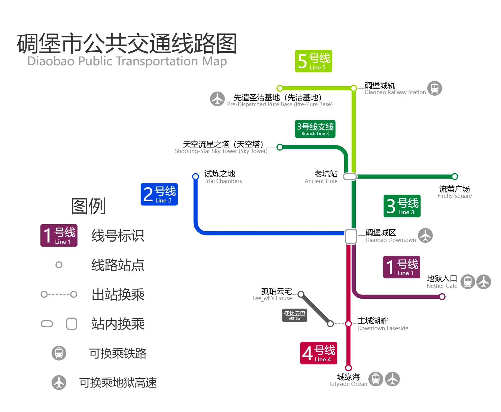
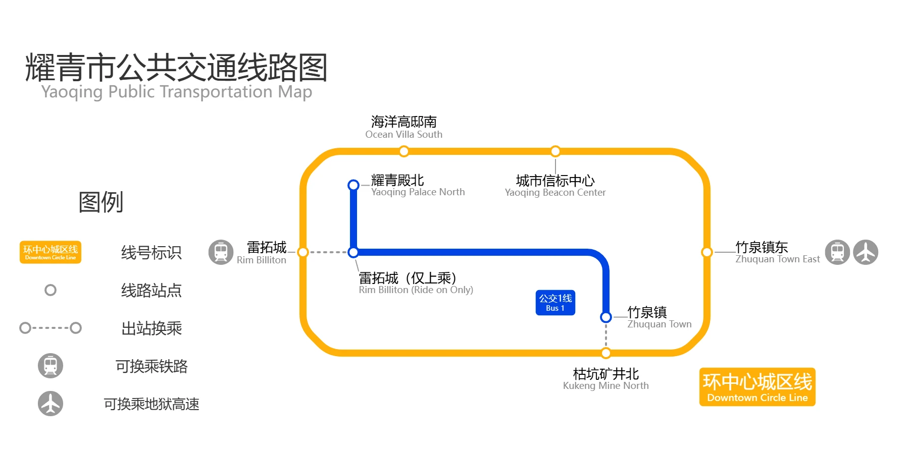
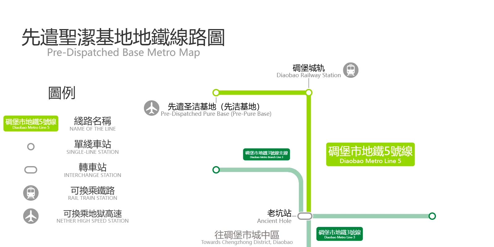
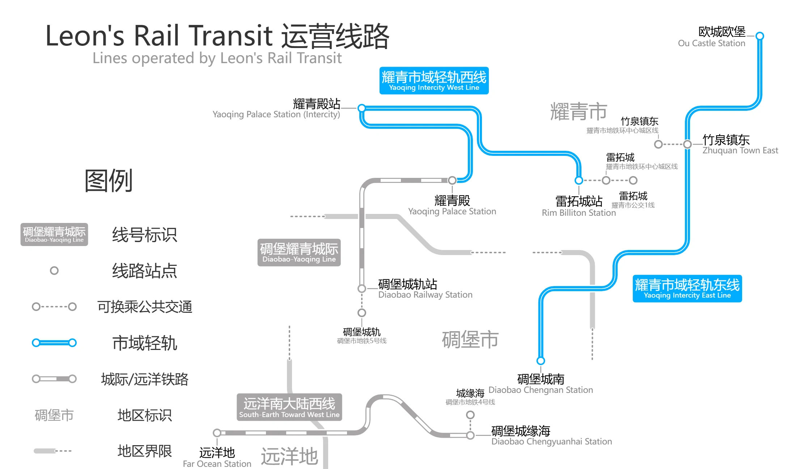

Leon's Transit Company
自2024年来，隶属于 Leon's Transit Company 的
Leon's Metro Transit 和 Leon's Rail Transit 公司已参与了多个城市与地区的城建以及交通建设。
Leon's Metro Transit
Leon's Metro Transit 自成立以来，始终坚持“安全至上、品质为本、创新驱动、服务优先”的发展理念，专注于城市轨道交通、公交系统与综合城建项目的投资、建设与运营。我们不仅仅是一家交通建设企业，更是推动城市发展、提升市民生活品质的重要伙伴。
自2024年起，公司凭借卓越的工程实力与完善的管理体系，正式进入碉堡市市场。在短短数年间，公司实现了从单线建设到多线网络运营的跨越式发展，并通过引入国际先进的施工技术和智慧化的运营管理系统，不断刷新城市交通的效率与品质。如今，Leon's Metro Transit 已成长为区域内具有广泛影响力的综合交通服务企业，逐步走向多城市布局、多元化发展的新格局。
发展历程
-
2024年
我司受碉堡市市长委托，成功承建了 地铁2号线（碉堡城区—试炼之地），为市民日常通勤与跨区出行提供了便捷通道。同年，公司承建并投入运营 碉堡市地铁1号线（碉堡城区—地狱入口），标志着碉堡市地铁体系的雏形正式形成。凭借优异的施工质量与稳定的运营服务，公司获得碉堡市政府及社会各界的高度赞誉。
-
2024-2025年
随着碉堡市城市规模的扩张与人口的增长，公司陆续承建并运营了 地铁3号线、3号线支线、4号线及5号线，构建了覆盖更广区域的城市轨道交通网络。其中，4号线横穿江底，工程施工条件极为复杂，然而公司凭借先进的工程设备与吃苦耐劳的精神，克服了多项技术难关，最终实现按期完工与顺利通车，成为城市交通史上的里程碑工程。
-
2025年
公司业务成功拓展至耀青市，顺利承建并独立运营 耀青市环中心城区线，覆盖雷拓城、竹泉镇等重点片区，为新兴城市的发展注入了强劲动力。这不仅标志着 Leons’s Metro Transit 完成了跨城市的战略布局，更代表着公司进入了全面化、多元化发展的全新阶段。
现运营线路
碉堡市
地铁
- 1号线：碉堡城区 ↔ 地狱入口
- 2号线：碉堡城区 ↔ 试炼之地
- 3号线：碉堡城区 ↔ 流萤广场
- 3号线支线：碉堡城区 ↔ 天空流星之塔
- 4号线：碉堡城区 ↔ 城缘海
- 5号线：老坑站 ↔ 先遣圣洁基地
云巴
- 便携云巴：孤珀云宅 ↔ 主城湖畔

耀青市
地铁
- 环中心城区线：城市定位信标 ↔ 城市信标中心
公交快线
- 公交1线：耀青殿 ↔ 竹泉镇

先遣聖潔基地
地鐵
- 碉堡市地鐵5號綫：老坑站 ↔ 先遣圣洁基地

未来发展理念
展望未来，Leon's Metro Transit 将继续以 “智慧交通·绿色出行·城市共生” 为使命，积极践行企业社会责任，推动城市交通与城市生活的深度融合。
- 多城联营：在更多城市复制碉堡市、耀青市的成功经验，构建跨城市的地铁与公交网络。
- 绿色可持续：推广新能源公交、节能地铁车辆与绿色建材，全面响应低碳环保政策，助力建设生态文明城市。
- 产城融合：以TOD为核心发展模式，打造“轨道+社区+商业”的全链条产业生态，推动城市经济与社会发展双向共赢。
我们的愿景
Leon's Rail Transit 我们相信，交通不仅是连接城市的脉络，更是推动社会进步与改善民生的重要力量。未来，Leon's Metro Transit 将不断开拓创新，努力成为 区域领先、全国知名、国际认可 的轨道交通与城建服务提供商。
让更多的市民在日常生活中体验 安全、舒适、便捷 的出行方式，让城市的发展因交通而更加高效，让生活因交通而更加美好。
Leon's Rail Transit
Leon's Rail Transit 成立于碉堡市与耀青市快速发展的新时代背景下，是 Leon's 企业的核心成员之一。公司专注于 铁路、城际轨道、轻轨、跨海大桥及大型综合工程 的建设与运营，以“跨越疆界，联通未来”为使命，致力于推动区域一体化发展与城市群互联互通。
不同于 Leon's Metro Transit 聚焦城市地铁与公交业务，Leon's Rail Transit 将目光投向更广阔的疆域：从跨海大桥到洲际铁路，从市域轻轨到综合城建项目，公司始终坚持以创新技术、精湛工艺与高标准建设，为城市与区域的发展提供坚实支撑。
短短几年间，Leon's Rail Transit 已从一间新兴企业成长为享誉全境的综合性建设集团。
发展历程
-
2024年末
公司承接首个项目——碉堡耀青城际铁路。该项目需要跨越碉堡市与耀青市之间的海域，难度极高。公司成功设计并修建了 碉堡耀青跨海大桥 ，一座公路铁路两用的宏伟工程。该项目不仅成为区域交通史上的空前成就，也奠定了公司在跨海工程领域的技术领先地位。
-
2025年初
公司受耀青市政府委托，建设 耀青市域轻轨铁路，使得耀青市大陆与海岸片区、竹泉镇与欧城区紧密相连。轻轨二期工程更进一步延伸至碉堡市城南区，加速了两市一体化发展，提升了两地居民的生活便利度。
-
2025年中旬
应碉堡市委托，开拓 远洋南大陆西线铁路，首次将碉堡市与千公里之外的外域城市联通，开创了跨区域发展的新篇章。随着这一工程的竣工，Leon's Rail Transit 的声誉迅速提升，成为区域性铁路建设的领军企业。
现运营线路
碉堡耀青城际铁路
这是 Leon's Rail Transit 的首个重点项目，也是全境的标志性工程。线路横跨碉堡市与耀青市之间的海域，核心工程为 碉堡耀青跨海大桥。这是一座集铁路与公路功能于一体的跨海大桥，突破了地理隔阂，首次真正意义上把两座隔海相望的城市紧密联系在一起。该工程不仅极大缩短了两地的通行时间，也成为区域经济、文化交流的重要纽带，被誉为“全境交通史上的奇迹”。
耀青市域轻轨铁路
耀青市域轻轨铁路分为东西两段，各自承担不同的交通使命：
- 东段：自起竹泉镇出发，最终抵达欧城区。该线路在一期建成后，有效缓解了市区南北方向的交通压力，并促进了欧城区的发展。在二期工程中，该线路进一步向南延伸至碉堡市城南区，跨越城市边界，使碉堡市与耀青市在日常通勤、经济合作上更加紧密，为两城一体化发展提供了重要支撑。
- 西段：作为连接耀青市西海岸与主东大陆的重要交通走廊，西段铁路打通了沿海与内陆的联系，带动了两区域的发展。
远洋南大陆西线铁路
作为一条真正意义上的远程铁路，西线铁路自碉堡市出发，延伸至近千公里以外的南大陆西部地区。这是碉堡市首次通过铁路直达外区域中心城市，大幅缩短了长途运输与人员往来的时效，开启了区域间全方位合作的新篇章。此项目不仅提升了碉堡市在全境的战略地位，也使 Leon's Rail Transit 的品牌声誉远播。

Leon's Rail Transit 运营线路图
城市建设与综合项目
Leon's Rail Transit 已不再仅仅是一家铁路建设公司，而是成长为综合性的城市建设企业。公司在多个城市留下了代表性成果：
-
碉堡市 TOD 项目：
- 四号线主城湖畔站旁住宅
- 银白工业区便捷云巴线旁 孤珀云宅
- 五号线先洁基地站 三角公寓
-
耀青市 TOD 项目：
- 环中心城区线雷拓城 住宅区
- 环中心城区线枯坑矿井北、竹泉镇东 住宅群
- 五号线先洁基地站 三角公寓
-
耀青市大型工程项目：
- 耀青市著名地标与旅游景点 海洋高邸
- 欧城区 欧阳氏家族象征建筑 欧城欧堡
- 欧城区的文化与旅游发展特色建筑群 荒木酒馆、巫术城堡
-
先洁基地重点工程：
- 先洁基地代表性历史建筑 先遣站点
- 先洁基地娱乐圣地 圣泉池
- 先洁基地地标性建筑 图书教堂
- 全境最大的折跃门——越界门
通过这些项目，公司逐渐形成了“铁路+城市+地标”的多元发展格局，成为推动区域城市群升级的重要力量。
未来发展理念
Leon's Rail Transit 将继续秉持 “跨越疆界，联通未来” 的愿景，积极探索铁路建设与城市发展的更多可能：
- 跨区域互联：构建覆盖更广的城际铁路网络，缩短城市之间的时空距离。
- 绿色发展：推广新能源列车与环保建材，打造低碳、可持续的交通体系。
- 产城融合：推动 TOD 模式与地标建设，形成“轨道带动城市，城市反哺交通”的良性循环。
- 国际视野：未来积极拓展海外业务，将跨海大桥与综合铁路建设经验推向更广阔的舞台。
我们的愿景
Leon's Rail Transit 坚信，铁路不仅是城市之间的桥梁，更是文化、经济与人心之间的纽带。我们致力于用专业与匠心，打造一条条贯通四方的通路；我们渴望用科技与责任，塑造一座座承载梦想的城市。
未来，公司将与 Leon's Metro Transit 协同发展，共同构建 立体化、多层次、可持续 的现代化交通体系，让每一座城市因联通而繁荣，让每一位居民因交通而受益。
未来
我们将参与更多……